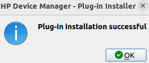

OK3568 4.19.206 Buildroot Adding HP Printer
Document classification: □ Top secret □ Secret □ Internal information ■ Open
Copyright
The copyright of this manual belongs to Baoding Folinx Embedded Technology Co., Ltd. Without the written permission of our company, no organizations or individuals have the right to copy, distribute, or reproduce any part of this manual in any form, and violators will be held legally responsible.
Forlinx adheres to copyrights of all graphics and texts used in all publications in original or license-free forms.
The drivers and utilities used for the components are subject to the copyrights of the respective manufacturers. The license conditions of the respective manufacturer are to be adhered to. Related license expenses for the operating system and applications should be calculated/declared separately by the related party or its representatives.
Adding HP Printer
Buildroot Configuration of the File System
Configure cups, cpus_filter, hplip, ghostscript, ghostscript - fonts, and poppler in Buildroot.
Re - compile to generate the file system and burn it to the development board.
Run tests on the development board.
After the system starts, you need to modify the /etc/cups/cups - files.conf file; otherwise, the cups service cannot start.
# Comment out the 19th line SystemGroup lpadmin sys system root.
# Change FileDevice No to Yes.
#************************Omit some information************************
# Administrator user group, used to match @SYSTEM in cupsd.conf policy rules...
# This cannot contain the Group value for security reasons...
#SystemGroup lpadmin sys system root
# User that is substituted for unauthenticated (remote) root accesses...
#RemoteRoot remroot
# Do we allow file: device URIs other than to /dev/null?
FileDevice Yes
# Permissions for configuration and log files...
#ConfigFilePerm 0640
#LogFilePerm 0644
# Location of the file logging all access to the scheduler; may be the name
# "syslog". If not an absolute path, the value of ServerRoot is used as the
# root directory. Also see the "AccessLogLevel" directive in cupsd.conf.
AccessLog /var/log/cups/access_log
# Location of cache files used by the scheduler...
#CacheDir /var/cache/cups
After the modification, execute the commands in the command line.
[root@ok3568:/]# /etc/init.d/cups start
cups: started scheduler.
[root@ok3568:/]# lpinfo -v
network socket
network beh
network http
network ipp
network lpd
direct usb://HP/LaserJet%20Professional%20P1108?serial=000000000QND2C2CPR1a
[root@ok3568:/]# lpadmin -p p1108 -E -v usb://HP/LaserJet%20Professional%20P1108?serial=000000000QND2C2CPR1a -P /etc/cups/ppd/HP_LaserJet_Professional_P1108.ppd
lpadmin: Printer drivers are deprecated and will stop working in a future version of CUPS.
[root@ok3568:/]# lpoptions -d p1108
copies=1 device-uri=usb://HP/LaserJet%20Professional%20P1108?serial=000000000QND2C2CPR1a finishings=3 job-cancel-after=10800 job-hold-until=no-hold job-priority=50 job-sheets=none,none marker-change-time=0 number-up=1 printer-commands=none printer-info=p1108 printer-is-accepting-jobs=true printer-is-shared=true printer-is-temporary=false printer-location printer-make-and-model='HP LaserJet Professional p1108, hpcups 3.20.3, requires proprietary plugin' printer-state=3 printer-state-change-time=1722826243 printer-state-reasons=none printer-type=36876 printer-uri-supported=ipp://localhost/printers/p1108
[root@ok3568:/]# lp /home/test.pdf
request id is p1108-1 (1 file(s))
//After executing the LP command, as long as the PPD file is correct, the printer should act. If the printer does not act, the PPD file is incorrect.
//See the problem description "Obtaining PPD files from the virtual machine Ubuntu" for the method of obtaining PPD files.
Encountered Problems
Printer Not Working
The cups service can start normally.
The device information can be queried using lpinfo -v.
When configuring the default printer, use the ppd files in the /usr/share/ppd/HP/ directory.
When using the lp command to print a file, there is printing information in the command line, but the printer does not work.
Running hplip - 3.20.6 - plugin.run reports an error.
Describe the error when running the .run file and the solution. However, even after the installation was completed, the ppd file for the corresponding printer model was not obtained. This process is recorded for future reference.
All hplip - plugin file download websites: http://www.openprinting.org/download/printdriver/auxfiles/HP/plugins/
The hplip version configured through Buildroot is 3.20.6, so download the corresponding version directly from the plugin download website.
[root@ok3568:/]# wget https://www.openprinting.org/download/printdriver/auxfiles/HP/plugins/hplip-3.20.6-plugin.run
[root@ok3568:/]# wget https://www.openprinting.org/download/printdriver/auxfiles/HP/plugins/hplip-3.20.6-plugin.run.asc
[root@ok3568:/]# chmod +x hplip-3.20.6-plugin.run*
[root@ok3568:/]# ./hplip-3.20.6-plugin.run
Uncompressing HPLIP 3.20.6 Plugin Self Extracting Archive..............................................................
Plug-in version: 3.20.6
Installed HPLIP version: 3.20.6
You must agree to the license terms before installing the plug-in:
*************************Omit some information************************
Do you accept the license terms for the plug-in (y=yes*, n=no, q=quit) ? y
Traceback (most recent call last):
File "./plugin_install.py", line 75, in <module>
import class_plugin
File "/tmp/selfgz87811537/class_plugin.py", line 186, in <module>
distro_name = get_distro_name().lower()
File "/tmp/selfgz87811537/class_plugin.py", line 65, in get_distro_name
os_name = platform.dist()[0]
AttributeError: module 'platform' has no attribute 'dist'
Running it directly reports an error, so use the –keep parameter to obtain the plugin installation source files for modification.
[root@ok3568:/]# ./hplip-3.20.6-plugin.run --keep
Uncompressing HPLIP 3.20.6 Plugin Self Extracting Archive..............................................................
Plug-in version: 3.20.6
Installed HPLIP version: 3.20.6
You must agree to the license terms before installing the plug-in:
*************************Omit some information************************
Do you accept the license terms for the plug-in (y=yes*, n=no, q=quit) ? y
Traceback (most recent call last):
File "./plugin_install.py", line 75, in <module>
import class_plugin
File "/tmp/selfgz87811537/class_plugin.py", line 186, in <module>
distro_name = get_distro_name().lower()
File "/tmp/selfgz87811537/class_plugin.py", line 65, in get_distro_name
os_name = platform.dist()[0]
AttributeError: module 'platform' has no attribute 'dist'
There are still errors, but using the –keep parameter will generate a plugin_tmp folder in the current directory, which is the installation package of the .run file.
AttributeError: module “platform” has no attribute ‘dist’
The usage of platform.dist()[0] was deprecated after Python 3.5. In later versions, platform.system()[0] should be used instead.
The Python version configured on the 3568 through Buildroot is Python 3.8.
Open the plugin_tmp/class_plugin.py file and modify platform.dist to platform.system.
Re - execute the installation.
[root@ok3568:/plugin_tmp]# ./hplip-plugin-install
Plug-in version: 3.20.6
Installed HPLIP version: 3.20.6
You must agree to the license terms before installing the plug-in:
*************************Omit some information************************
Do you accept the license terms for the plug-in (y=yes*, n=no, q=quit) ? y
Traceback (most recent call last):
File "./plugin_install.py", line 75, in <module>
import class_plugin
File "/plugin_tmp/class_plugin.py", line 187, in <module>
auth_type = AUTH_TYPES[distro_name]
KeyError: 'linux'
KeyError: ‘linux’
Similarly, modify the plugin_tmp/class_plugin.py file and add the method to obtain root privileges for Linux, ‘su’.
AUTH_TYPES = {'mepis': 'su',
'debian': 'su',
'suse': 'su',
'mandriva': 'su',
'fedora': 'su',
'redhat': 'su',
'rhel': 'su',
'slackware': 'su',
'gentoo': 'su',
'redflag': 'su',
'ubuntu': 'sudo',
'xandros': 'su',
'freebsd': 'su',
'linspire': 'su',
'ark': 'su',
'pclinuxos': 'su',
'centos': 'su',
'igos': 'su',
'linuxmint': 'sudo',
'linpus': 'sudo',
'gos': 'sudo',
'boss': 'su',
'lfs': 'su',
'manjarolinux': 'su',
'linux': 'su',
}
Re - execute the installation. The installation is completed, but no new ppd file is generated.
[root@ok3568:/]# ./hplip-plugin-install
Plug-in version: 3.20.6
Installed HPLIP version: 3.20.6
You must agree to the license terms before installing the plug-in:
************************Omit some information************************
Do you accept the license terms for the plug-in (y=yes*, n=no, q=quit) ? y
Target file /usr/share/hplip/prnt/plugins/hbpl1-arm64.so already exists. Replacing.
Symlink already exists. Replacing.
Creating symlink /usr/share/hplip/prnt/plugins/hbpl1.so (link) to file /usr/share/hplip/prnt/plugins/hbpl1-arm64.so (target)...
Target directory /usr/share/hplip/data/firmware does not exist. Creating.
Target directory /usr/share/hplip/data/plugins does not exist. Creating.
Target file /usr/share/hplip/prnt/plugins/lj-arm64.so already exists. Replacing.
Symlink already exists. Replacing.
Creating symlink /usr/share/hplip/prnt/plugins/lj.so (link) to file /usr/share/hplip/prnt/plugins/lj-arm64.so (target)...
Obtain the ppd file from the virtual machine Ubuntu.
After testing, installing the plugin on the development board has no effect. Try to test whether the printer can be driven on the PC - side Ubuntu.
forlinx@ubuntu:~$ sudo apt-get install hplip-gui
//Installation of visual interface operation software
forlinx@ubuntu:~$ hp-plugin
//Install the hpplugin plug-in


Then continue until the installation is complete.

forlinx@ubuntu:~$ hp-setup
//Add a default printer
After successful adding and printing on the virtual machine Ubuntu, the corresponding ppd file can be found in the /etc/cups/ppd directory.
forlinx@ubuntu:~$ ls /etc/cups/ppd/HP_LaserJet_Professional_P1108.ppd
/etc/cups/ppd/HP_LaserJet_Professional_P1108.ppd
Copy this ppd file to the board, use lpadmin to load the correct ppd file, and test printing using the lp command.
[root@ok3568:/]# lpadmin -p p1108 -E -v usb://HP/LaserJet%20Professional%20P1108?serial=000000000QND2C2CPR1a -P /etc/cups/ppd/HP_LaserJet_Professional_P1108.ppd
lpadmin: Printer drivers are deprecated and will stop working in a future version of CUPS.
[root@ok3568:/]# lpoptions -d p1108
copies=1 device-uri=usb://HP/LaserJet%20Professional%20P1108?serial=000000000QND2C2CPR1a finishings=3 job-cancel-after=10800 job-hold-until=no-hold job-priority=50 job-sheets=none,none marker-change-time=0 number-up=1 printer-commands=none printer-info=p1108 printer-is-accepting-jobs=true printer-is-shared=true printer-is-temporary=false printer-location printer-make-and-model='HP LaserJet Professional p1108, hpcups 3.20.3, requires proprietary plugin' printer-state=3 printer-state-change-time=1722826243 printer-state-reasons=none printer-type=36876 printer-uri-supported=ipp://localhost/printers/p1108
[root@ok3568:/]# lp /home/test.pdf
request id is p1108-1 (1 file(s))
When the lp command is issued, the printer works, but the printed PDF file is blank.
Print PDF files as blank pages.
Test two printers HP-P1108 HP-P1106.
The printer that prints PDF files after being configured by the method in this article is active, but all pages are blank.
The test printing PNG picture can be printed normally.
Find a description of a similar problem on the HP printer website.
It is suggested to print PDF files as images. So, convert the PDF file to a PNG image first and then print.
[root@ok3568:/]# pdftoppm -png test.pdf test
[root@ok3568:/]# ls
bin home lost+found opt sbin timestamp var
busybox.config init media proc sdcard tmp
data lib misc rockchip_test sys udisk
dev lib64 mnt root test-1.png userdata
etc linuxrc oem run test.pdf usr
//This command converts the test. PDF to a PNG file named test.
//The number -1 after the file name represents the page number of the PDF file.
The reason is unknown, but PDF files can be converted into PNG file by tools for printing, and the function can be used to meet the needs.
Leave the detailed steps and continue to study later.
Refer to:
Manual installation of HP printer plugins on Ubuntu 18.04:
https://blog.csdn.net/qq_31813825/article/details/108369750All hplip - plugin file download websites: http://www.openprinting.org/download/printdriver/auxfiles/HP/plugins/